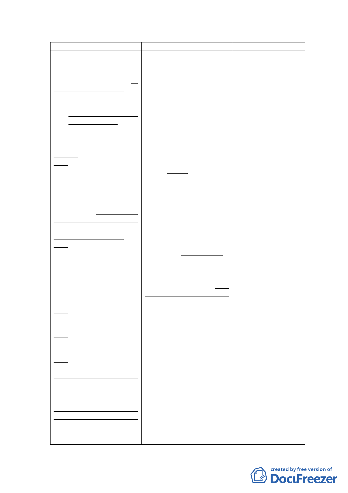

新計畫
福利服務。
維持廣慈博愛院及福
德平宅既有社會救助功能，
照顧老人及身心障礙者，並
提供相關福利服務設施，提
供市民運動休憩場所。
(二)社會福利設施用地－規
劃公營住宅，滿足市民
基本居住需求。
配合本市推動公營住
宅政策，增加住宅供給並提
升居住品質，滿足市民居住
需求。
(三)公園用地－滿足地區休
憩需求。
臨近福德街與福德街
84巷側配置公園用地，提供
週邊地區居民休閒活動空
間。並得以多目標方式設置
地下停車場。惟實際設置數
量及期程得視周邊停車供需
情形併周邊商業區、社會福
利設施用地檢討設置。
(四)商業區－提供鄰里性商
務需求。
於福德街與大道路交
口處配置商業區，提供周邊
地區日常商務需求設施。
(五)拓寬福德街84巷計畫道
路寬度11公尺至15公
尺，紓解未來車潮。
(六)藉由捷運出入口設置，
聯繫基地與南端親山
系統。
(七)廢除廣慈博愛院與福德
平宅間之計畫道路。
(八)參酌原開發強度規定進
行規劃開發
為提高公有土地利用
效能，並配合本市公營住宅
政策，滿足市民基本居住需
求，在不影響周邊交通服務
水準，及原機關用地容積率
400％上限下，進行規劃開
發。
原計畫
說明
福利服務。
之計畫目標，新增於
維持廣慈博愛院及福 社會福利設施用地
德平宅既有社會救助功能， 規劃公營住宅相關
照顧老人及身心障礙者，並 構想。
設置廣慈文物館及活力健康 3.本計畫停車位之提
區，提供市民運動休憩場
供係以滿足基地及
所，相關政策說明詳附件
地區停車需求為
二。
主，未來社會福利設
施用地、商業區開發
後所設置之部分停
車位亦可供地區使
用，爰增加後續開發
彈性，得視周邊停車
(二)公園用地－滿足地區休 供需情形調整實際
憩與停車需求。
停車設置數量及期
臨近福德街與福德街 程，或提出替代計畫
84巷側配置公園用地，提供 等方式辦理。
週邊地區居民休閒活動空 4.因商業區、社會福利
間，並以多目標方式設置地 設施用地修正採分
下停車場，提供500個小汽車 別開發，故刪除部分
位、500個機車位供週邊地區 構想內容。
居民使用。
5.配合本府公營住宅
政策，在周邊道路服
(三)商業區－提供鄰里性商 務水準、停車需求等
務需求並挹注社會福 可負荷之前提下，參
利設施財源。
酌原機關用地開發
於福德街與大道路交 強度之規定進行後
口處配置商業區，提供周邊 續開發，後續並將配
地區日常商務需求設施，並 合修訂相關細部計
藉由商業區之開發促進社會 畫土地使用分區管
福利事業永續經營。
制規定，爰刪除原主
(四)拓寬福德街84巷計畫道 要計畫有關降低整
路寬度11公尺至15公 體開發強度，比照鄰
尺，紓解未來車潮。 近第三種住宅區容
(五)藉由捷運出入口設置， 積率進行總量管制
聯繫基地與南端親山 之規劃構想文字。
系統。
6.修正條次。
(六)廢除廣慈博愛院與福德
平宅間之計畫道路。
(七)降低原有開發強度、總
量管制
本計畫區原屬機關用
地，建蔽率40%、容積率
400%，惟地區現況發展程度
密集，公共設施服務水準不
佳，宜降低整體開發強度，
故比照鄰近第三種住宅區容
積率進行本計畫區開發總量
- 11 -